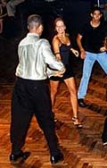

Meregue
Learning Merengue
First, find the beginning of the measure, the 1st beat. Almost all music has measures, and one must learn to find the 1st beat of the measure. It is difficult to explain in writing how to find the 1st beat, since songs start their measures differently, sometimes even changing from verse to verse. Sometimes it's signaled by the singer, but other times it's the chorus, the clave, the congas or the bass, and it may keep changing.
Finding the "1"
Find someone who knows how to find the 1 in the music, whether it's a teacher, friend, relative, fellow dancer or musician; some people just know the 1 and can show it to you. Put on some merengue and have them show you the 1, and explain how they found it. Then have them help you learn to feel it, count it and tap your feet all the way through entire songs. A good exercise is to stop and then restart the song to see how quickly you can find the 1 and get on the beat again.